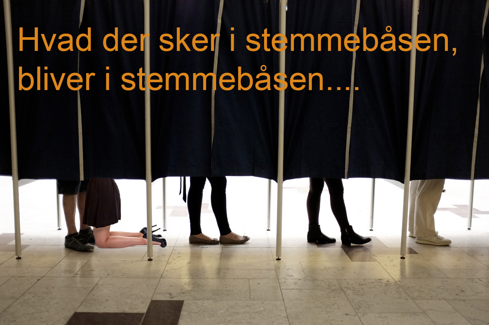

Shiiiit... Vidste du heller ikke,
der er kommunalvalg i år?
Eeh velkommen brother...
Vi sætter X for mange ting på denne side, der er sgu nok også nogle ting, vi ikke sætter X for, men bare synes er sjovt. Velkommen til vores fællesskab, velkommen til at sætte X, velkommen til #sætX!
Hvad sætter du X for?
I dag: Sætter jeg X for mere øl på lørdag, peace out!
Top 3 over bedste kampagner ved kommunalvalg
Nr.1 Sydfyn-style
Nr. 2 Hvad der sker i stemmebåsen...
Nr. 3 En mand med cowboyhat
INDSEND INDSLAG LIGE HER...
Alle unges opråb: Hvornår kan vi stemme online?
Hvis i gerne vil have, at vi skal stemme, hvorfor hjælper i os så ikke lidt? Jeg har altid fået at vide, at det er supervigtigt at stemme, og det synes jeg egentligt også, det er, men alligevel stemte jeg ikke ved sidste kommunalvalg. For det første var jeg lige flyttet hjemmefra, fra Jylland til Sjælland, og jeg vidste overhovedet ikke hvor jeg skulle tage hen for at stemme, jeg vidste sådan set heller ikke hvem jeg skulle stemme på, men det er en anden sag. Hvis jeg kunne stemme hjemmefra, på min telefon eller computer, så havde jeg helt sikkert fået det gjort. Så kooooom nu, vi vil gerne stemme, men vil i hjælpe os???? Det er meget muligt, at der er en eller tyve, der nu sidder og tænker; "Jaja, tag dig nu sammen, og lad være med at være doven." og der må jeg bare sige, jeg er nok ikke den eneste, der vælger ikke at stemme af en eller anden latterligt grund - ergo er jeg ikke alene, ergo bør man kigge på problemet, og bum jeg har givet jer løsningen helt gratis; sørg for at vi kan stemme online.